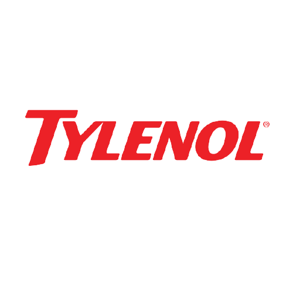

Foster's x Tylenol
About two company
FosterLogo
William and Ralph Foster created Foster's in 1887. They were so dedicated to delivering Foster's the way it should be enjoyed, they even sold it with ice to keep Australia's warm environment at bay. More than 120 Yeats later, the bold, refreshing taste of Foster's is available in more than 150 countries, making it the largest-selling Australian beer brand in the world
TylenolLogo
TThe brand was introduced in 1955 by McNeil Laboratories, a family owned pharmaceutical manufacturer. Two brothers took over the company from their father that year, and that year one of them learned about paracetamol, which was not on the US market at that time. To avoid competing with aspirin, they marketed it as a product to reduce fever in children, packaging it like a red fire truck with the slogan, "for little hotheads". The brand name Tylenol and the United States Adopted Name acetaminophen were generated by McNeil from the chemical name of the drug. Johnson & Johnson bought McNeil in 1959, and one year later the drug was made available over the counter.